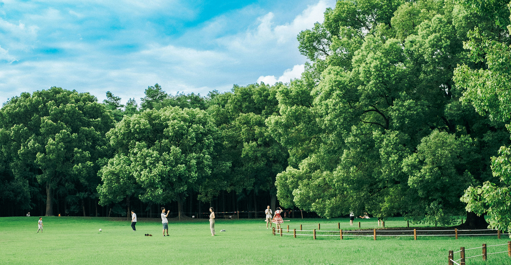

생명의숲 로고
메뉴열기
소개
활동
참여와후원
자료실
마이페이지
검색열기

생명의숲, 지구를 지키는
가장 푸른 약속
오늘 심은 나무,
우리들의 내일의 숨터
숲을 가꾸는 손길,
우리 모두의 생명
39,488
그루
2025년 한 해, 총 39,488그루의 생명을 가꾸었습니다.
오늘 심은 새 숨결, 2025년 생명의숲이 지구에 더한 희망입니다.
3.biz
4.story
 오늘 심은 나무,우리들의 내일의 숨터
오늘 심은 나무,우리들의 내일의 숨터